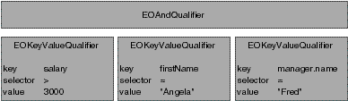

As described above, there are several EOQualifier subclasses,
each of which represents a different semantic. However, in most
cases you simply create a qualifier using the EOQualifier static method qualifierWithQualifierFormat:,
as follows:
EOQualifier qual = Qualifier.qualifierWithQualifierFormat("lastName = 'Smith'", null);The qualifier or group of qualifiers that result from such a statement is based on the contents of the format string you provide. For example, giving the format string "lastName = 'Smith'" as an argument to qualifierWithQualifierFormat returns an EOKeyValueQualifier object. But you don't normally need to be concerned with this level of detail.
The format strings you use to create a qualifier can be compound logical expressions, such as "firstName = 'Fred' AND age < 20". When you create a qualifier, compound logical expressions are translated into a tree of EOQualifier nodes. Logical operators such as AND and OR become EOAndQualifiers and EOOrQualifiers, respectively. These qualifiers conjoin (AND) or disjoin (OR) a group of sub-qualifiers. This is illustrated in Figure 4, in which the format string "salary > 300 AND firstName = 'Angela' AND manager.name = 'Fred'" has been translated into a tree of qualifiers.
EOQualifier Tree for 'salary > 300 AND firstName = "Angela" AND manager.name = "Fred"'
The qualifierWithQualifierFormat method
can't be used to create an instance of EOSQLQualifier. This is
because EOSQLQualifier uses a non-structured syntax. It also requires
an entity. To create an instance of EOSQLQualifier, you'd use
a statement such as the following:
EOQualifier myQual = new EOSQLQualifier(myEntity, myFormatString);
As described above, you typically create a qualifier from
a format string by using qualifierWithQualifierFormat.
This method takes as an argument a format string somewhat like that used
with the standard C printf() function.
The format string can embed strings, numbers, and other objects
using the conversion specification %@. The second argument to qualifierWithQualifierFormat is
an array that contains the value or result to substitute for any
%@ conversion specifications. This allows qualifiers to be built
dynamically. The following table lists the conversion specifications
you can use in a format string and their corresponding data types.
| Conversion Specification | Expected Value or Result |
| %@ | It
can either be an object whose toString (or description) method
returns a key (in other words, a String), or a value object such
as an String, Number, java.util.CalendarDate, and so on. |
| %% | Results in a literal % character. |
If you use an unrecognized character in a conversion specification (for example, %x), an exception is thrown.
For example, suppose you have an Employee entity with the
properties empID, firstName, lastName, salary,
and department (representing a to-one relationship
to the employee's department), and a Department entity with properties
deptID, and name. You could construct simple qualifier strings like the
following:
lastName = 'Smith' salary > 2500 department.name = 'Personnel'
The following examples build qualifiers similar to the qualifier strings described above, but take the specific values from already-fetched enterprise objects:
Employee anEmployee; // Assume this exists.
Department aDept; // Assume this exists.
EOQualifier myQualifier;
NSMutableArray args = new MutableVector();
args.addObject("lastName");
args.addObject(anEmployee.lastName());
myQualifier = EOQualifier.qualifierWithQualifierFormat("%@ = %@", args);
args.removeAllObjects();
args.addObject("salary");
args.addObject(anEmployee.salary());
myQualifier = EOQualifier.qualifierWithQualifierFormat("%@ > %f", args);
args.removeAllElements();
args.addElement("department.name");
args.addElement(aDept.name());
myQualifier = EOQualifier.qualifierWithQualifierFormat("%@ = %@", args);The enterprise objects here implement methods for directly
accessing the given attributes: lastName and salary for
Employee objects, and name for Department
objects. Note that unlike a string literal, the %@ conversion specification
is never surrounded by single quotes:
// For a literal string value such as Smith, you use single quotes.
EOQualifier.qualifierWithQualifierFormat("lastName = 'Smith'", null);
// For the conversion specification %@, you don't use quotes
args.removeAllElements();
args.addElement("Jones");
EOQualifier.qualifierWithQualifierFormat("lastName = %@", args);Typically format strings include only two data types: strings and numbers. Single-quoted or double-quoted strings correspond to String objects in the argument array, non-quoted numbers correspond to Numbers, and non-quoted strings are keys. You can get around this limitation by performing explicit casting, as described in the section "Using Different Data Types in Format Strings" on page HIDDEN.
The operators you can use in constructing qualifiers are
=, ==, !=, <, >, <=, >=, "like", and "caseInsensitiveLike".
The like and caseInsensitiveLike operators
can be used with wildcards to perform pattern matching, as described
in "Using Wildcards and the like Operator".
To construct a qualifier that fetches rows matching NULL, use either of the approaches shown in the following example:
NSMutableArray args = new NSMutableArray();
// Approach 1
EOQualifier.qualifierWithQualifierFormat("bonus = nil", null);
// Approach 2
args.addElement(NullValue.nullValue());
EOQualifier.qualifierWithQualifierFormat("bonus = %@", args);When you use the like or caseInsensitiveLike operator
in a qualifier expression, you can use the wildcard characters *
and ? to perform pattern matching, for example:
"lastName like 'Jo*'"
matches Jones, Johnson, Jolsen, Josephs, and so on.
The ? character just matches a single character, for example:
"lastName like 'Jone?'"
matches Jones.
The asterisk character (*) is only interpreted as a wildcard
in expressions that use the like or caseInsensitiveLike operator.
For example, in the following statement, the character * is treated
as a literal value, not as a wildcard:
"lastName = 'Jo*'"
The format strings you use to initialize a qualifier can include methods.
The parser recognizes an unquoted string followed by a colon (such
as myMethod:) as a method. For example:
point1 isInside: area firstName isAnagramOfString: "Computer"
Methods specified in a qualifier are parsed and applied only in memory; that is, they can't be used in to qualify fetches in a database.
You rarely need to explicitly create an instance of EOAndQualifier, EOOrQualifier, or EONotQualifier. However, you may want to create instances of EOKeyValueQualifier and EOKeyComparisionQualifier. The primary advantage of this is that it lets you exercise more control over how the qualifier is constructed.
If you want to explicitly create a qualifier subclass, you
can do it using code such as the following excerpt, which uses EOKeyValueQualifier
to select all objects whose "isOut" key is equal to 1 (meaning true).
In the excerpt, the qualifier is used to filter an in-memory array.
// Create the qualifier
EOQualifier qual = new EOKeyValueQualifier("isOut", EOQualifier.QualifierOperatorEqual,
new Integer(1));
// Filter an array and return it
return Qualifier.filteredVectorWithQualifier(allRentals(), qual);filteredArrayWithQualifier is a method that returns an array containing objects from the provided array that match the provided qualifier.
A custom subclass of EOQualifier must implement the EOQualifierEvaluation interface if they are to be evaluated in memory.